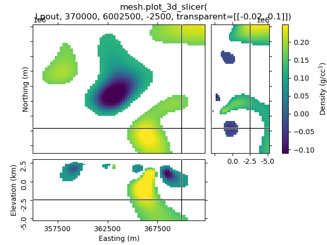

Note
Click here to download the full example code
Slicer demo¶
The example demonstrates the plot_3d_slicer
- contributed by @prisae
Using the inversion result from the example notebook plot_laguna_del_maule_inversion.ipynb
In the notebook, you have to use %matplotlib notebook.
# %matplotlib notebook
import shelve
import discretize
import numpy as np
import tarfile
import matplotlib.pyplot as plt
from matplotlib.colors import SymLogNorm
import sys
if sys.version_info[0] < 3:
print("This example only runs on Python 3")
sys.exit(0)
Download and load data¶
In the following we load the mesh and Lpout that you would
get from running the laguna-del-maule inversion notebook.
f = discretize.utils.download(
"https://storage.googleapis.com/simpeg/laguna_del_maule_slicer.tar.gz"
)
tar = tarfile.open(f, "r")
tar.extractall()
tar.close()
with shelve.open('./laguna_del_maule_slicer/laguna_del_maule-result') as db:
mesh = db['mesh']
Lpout = db['Lpout']
Out:
file already exists, new file is called /home/travis/build/simpeg/discretize/examples/laguna_del_maule_slicer.tar.gz
Downloading https://storage.googleapis.com/simpeg/laguna_del_maule_slicer.tar.gz
saved to: /home/travis/build/simpeg/discretize/examples/laguna_del_maule_slicer.tar.gz
Download completed!
Case 1: Using the intrinsinc functionality¶
1.1 Default options¶
mesh.plot_3d_slicer(Lpout)
Out:
/home/travis/build/simpeg/discretize/discretize/View.py:797: UserWarning: Matplotlib is currently using agg, which is a non-GUI backend, so cannot show the figure.
plt.show()
1.2 Create a function to improve plots, labeling after creation¶
Depending on your data the default option might look a bit odd. The look of the figure can be improved by getting its handle and adjust it.
def beautify(title, fig=None):
"""Beautify the 3D Slicer result."""
# Get figure handle if not provided
if fig is None:
fig = plt.gcf()
# Get principal figure axes
axs = fig.get_children()
# Set figure title
fig.suptitle(title, y=.95, va='center')
# Adjust the y-labels on the first subplot (XY)
plt.setp(axs[1].yaxis.get_majorticklabels(), rotation=90)
for label in axs[1].yaxis.get_ticklabels():
label.set_visible(False)
for label in axs[1].yaxis.get_ticklabels()[::3]:
label.set_visible(True)
axs[1].set_ylabel('Northing (m)')
# Adjust x- and y-labels on the second subplot (XZ)
axs[2].set_xticks([357500, 362500, 367500])
axs[2].set_xlabel('Easting (m)')
plt.setp(axs[2].yaxis.get_majorticklabels(), rotation=90)
axs[2].set_yticks([2500, 0, -2500, -5000])
axs[2].set_yticklabels(['$2.5$', '0.0', '-2.5', '-5.0'])
axs[2].set_ylabel('Elevation (km)')
# Adjust x-labels on the third subplot (ZY)
axs[3].set_xticks([2500, 0, -2500, -5000])
axs[3].set_xticklabels(['', '0.0', '-2.5', '-5.0'])
# Adjust colorbar
axs[4].set_ylabel('Density (g/cc$^3$)')
# Ensure sufficient margins so nothing is clipped
plt.subplots_adjust(bottom=0.1, top=0.9, left=0.1, right=0.9)
1.3 Set xslice, yslice, and zslice; transparent region¶
The 2nd-4th input arguments are the initial x-, y-, and z-slice location (they default to the middle of the volume). The transparency-parameter can be used to define transparent regions.
1.4 Set clim, use pcolorOpts to show grid lines¶
1.5 Use pcolorOpts to set SymLogNorm, and another cmap¶
mesh.plot_3d_slicer(
Lpout, pcolorOpts={'norm': SymLogNorm(linthresh=0.01),'cmap': 'RdBu_r'}
)
beautify(
"mesh.plot_3d_slicer(Lpout,"
"\npcolorOpts={'norm': SymLogNorm(linthresh=0.01),'cmap': 'RdBu_r'})`"
)
Out:
/home/travis/build/simpeg/discretize/examples/plot_slicer_demo.py:139: MatplotlibDeprecationWarning: default base may change from np.e to 10. To suppress this warning specify the base keyword argument.
Lpout, pcolorOpts={'norm': SymLogNorm(linthresh=0.01),'cmap': 'RdBu_r'}
1.6 Use aspect and grid¶
By default, aspect='auto' and grid=[2, 2, 1]. This means that
the figure is on a 3x3 grid, where the xy-slice occupies 2x2 cells of the
subplot-grid, xz-slice 2x1, and the zy-silce 1x2. So the
grid=[x, y, z]-parameter takes the number of cells for x, y, and
z-dimension.
grid can be used to improve the probable weired subplot-arrangement
if aspect is anything else than auto. However, if you zoom
then it won’t help. Expect the unexpected.
Case 2: Just using the Slicer class¶
This way you get the figure-handle, and can do further stuff with the figure.
# You have to initialize a figure
fig = plt.figure()
# Then you have to get the tracker from the Slicer
tracker = discretize.View.Slicer(mesh, Lpout)
# Finally you have to connect the tracker to the figure
fig.canvas.mpl_connect('scroll_event', tracker.onscroll)
# Run it through beautify
beautify(
"'discretize.View.Slicer' together with\n'fig.canvas.mpl_connect'", fig
)
plt.show()
Out:
/home/travis/build/simpeg/discretize/examples/plot_slicer_demo.py:194: UserWarning: Matplotlib is currently using agg, which is a non-GUI backend, so cannot show the figure.
plt.show()
Total running time of the script: ( 0 minutes 3.253 seconds)